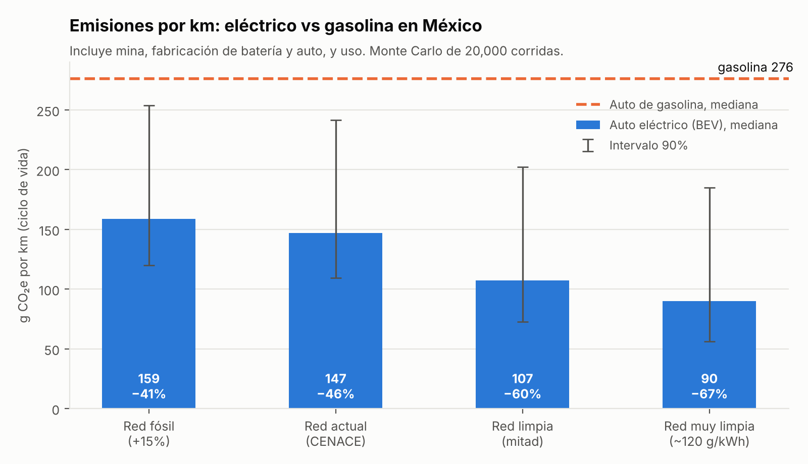
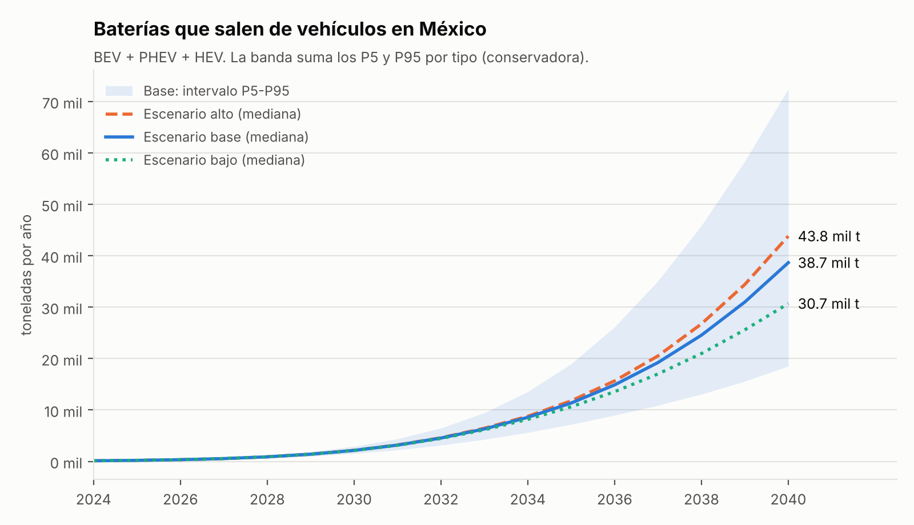
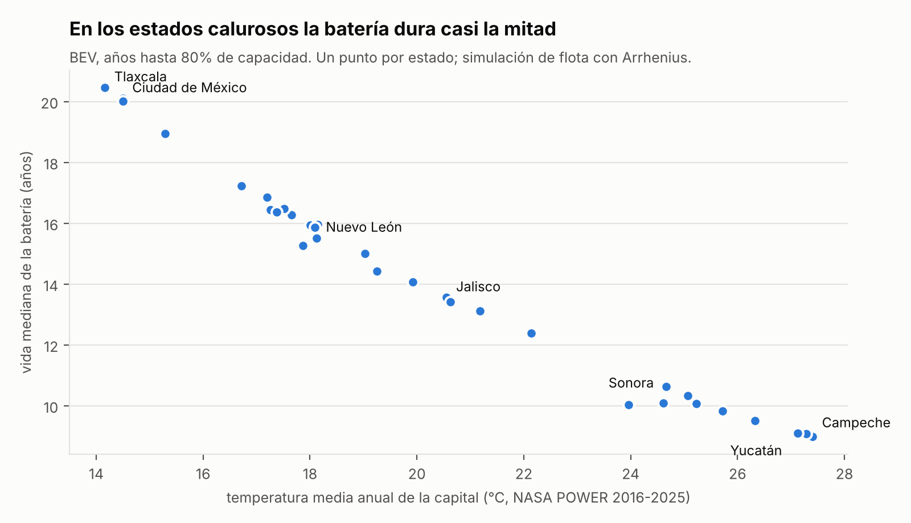
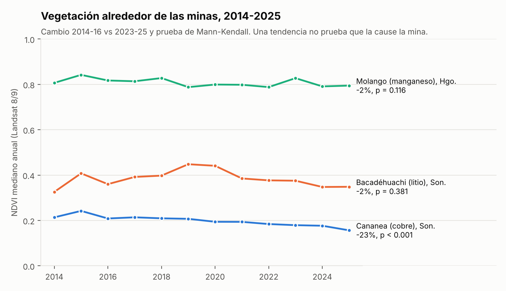

Abrir el extenso técnico
Código en GitHub
Datos (JSON)
−45%CO₂e por km del eléctrico frente a gasolina (red actual)
~26,800 kmpara pagar el carbono de fabricar la batería
99.5%de las simulaciones en que el eléctrico emite menos
38.7 mil tde baterías retiradas en 2040 (escenario base)
Las cifras se leen de api-estatica/resumen.json cuando la página está en un servidor; si la abres como archivo local se muestran los valores incluidos.
Gráficas




Endpoints de la API estática
Son archivos JSON de solo lectura (sin servidor). Se consultan con una petición GET normal desde cualquier página o programa.
| Endpoint | Contenido |
|---|---|
api-estatica/resumen.json | Cifras clave: CO₂ por km, equilibrio, toneladas retiradas |
api-estatica/retiros.json | Baterías que salen de vehículos, 2016–2040 (unidades, MWh, toneladas; P5/P50/P95; escenarios bajo/base/alto) |
api-estatica/ventas.json | Proyección de ventas BEV/PHEV/HEV por escenario |
api-estatica/vida-flota.json | Weibull de flota y vida de batería por estado |
api-estatica/weibull.json | Weibull de laboratorio con censura (CALCE, NASA, Oxford) |
api-estatica/co2.json | CO₂ de ciclo de vida, Monte Carlo (n = 20,000) |
api-estatica/escenarios-red.json | Cuatro escenarios de red eléctrica |
api-estatica/sobol.json | Índices de sensibilidad de Sobol |
api-estatica/ndvi.json | Tendencias de vegetación en zonas mineras |
api-estatica/retiros-por-clima.json | Toneladas 2035 por estado frente a su clima |
Consumir los datos desde otra página
const base = "https://raw.githack.com/joelmoralesgutierrez8-lab/bateria-ve-mx/main/";
const r = await fetch(base + "api-estatica/resumen.json");
const datos = await r.json();
console.log(datos.co2_g_km.reduccion_pct_p50);Incrustar esta página en otra (iframe)
<iframe src="https://raw.githack.com/joelmoralesgutierrez8-lab/bateria-ve-mx/main/index.html"
width="100%" height="720" style="border:0" loading="lazy"
title="Baterías de VE en México"></iframe>Para incrustar solo el extenso técnico, cambia index.html por docs/extenso_bateria_ve_mx.html.
Los resultados son escenarios con bandas de incertidumbre, no pronósticos puntuales. Supuestos, fuentes y límites: ver el extenso técnico.